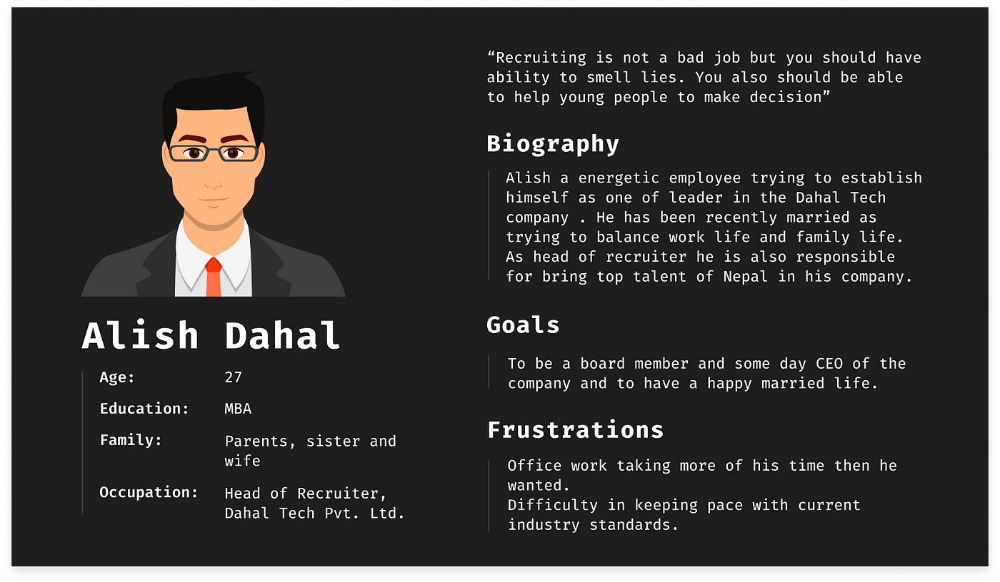

취업 및 포트폴리오 특강

표현하기
- 기술 스택 관련
- 개발 프로젝트 및 경험
- 커뮤니케이션
- 역할을 바꿔서 해보기
- 갈등 조정 및 해결
- 결국 리더를 해봐라.
- 커뮤니케이션
- GitHub 및 포트폴리오
- 협업 경험 어필
- 인수인계 등 타인에 대한 배려
- 얘기를 많이 해보기
- 아이디어 ==> 공유
- 자격증
- 현업에선 큰 의미 없다
- 그러나, 성실함을 보여주는 척도
- 남들보다, 여가시간에 이런 걸 했다. 기본적인 건 한다. 성실하다. 등 어필
- 수상 경험
- 타전공자의 경우, 그 경험이 활용될 수도 있다
- 수상 경험도 이와 마찬가지 ==> 다 넣어라
- 수상한 이벤트로부터 회고하기
- 회고를 통해 다음 프로젝트에서 기초를 개선
- 회고를 해야 수상한 것도 어필할 거리가 생긴다
- 일정
- ‘이거 … 에 얼마나 걸리겠니?’
- 리더십
- 개발자로서의 성장 및 러닝 커브
- 매일마다 기록,
readme.md작성 - 배운 것과 배우지 않은 것
- 매일마다 기록,
- 인재상
- 본인의 스토리를 최대한 만들어서 해당 회사의 인재상에 맞추는 것
- 신생 기업에 경우 “우리 회사에 대해 아는 게 있으세요?”
- 진심이 느껴지는 것들
- 기술에 대한 어필
- 신입에게 많은 걸 바라지 않는다.
- 해당 기술을 선택한 이유, 고민
- 남들이 보기 어려운 depth까지 예) 프레임워크의 실제 소스를 까보기
회사 함께 생각해보기
- 스타트업 - 내 개발 ==> 매출로, 책임감, 비용 관련, 등
- 중소기업 - “중소기업을” 많이 알기, 생각보다 좋은 회사가 많다 ==> 이때 “우리 회사 아세요?” 중요, 직원수 많은 게 좋을 수도 있음
- 중견기업 - (연혁 많다) 적응력,
- 대기업
- 연혁 짧은 회사
- 연혁 긴 회사
- 영업이익 많은 회사
- 영업이익 적은 회사
- SI/솔루션/플랫폼(서비스)
- SI는 데드라인 일정 맞추기에 바쁘다. 압박감 심함 ==> 주말, 야근, 등
- 구디, 가디 등
- 솔루션이나 플랫폼은 좀 나을 수도 있다. 즉, 자기껄 만드는 회사가 좀 더 기술력이 있다
- SI는 데드라인 일정 맞추기에 바쁘다. 압박감 심함 ==> 주말, 야근, 등
좋은 회사란?
- 어떤 게 좋은 회사, 나쁜 회사를 구별하는가?
- 기술 블로그, 툴의 전폭적 지원 (예: Intellij, AWS, 장비)